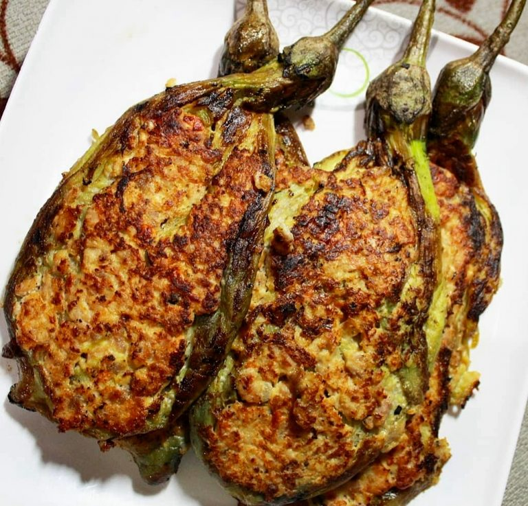

Tortang Talong

Eggplant coated with scrambled egg
Tortang Talong is a classic recipe, a perfect go-to in most Filipino households.
Ingredients
- Chinese Eggplant
- 2 pieces egg
- 1 teaspoon salk
- 6 tablespoon cooking oil
Directions
- grill the Eggplant until the color of the skin turns almost black
- let the eggplant cool for a while then peel off the skin. Set aside.
- Crack the eggs and place in a bowl
- Add salt and beat
- Place eggplant on a flat surface and flatten using fork
- Dip the flatten eggplant in the beaten egg mixture
- Heat the pan and pour cooking oil
- Fry the eggplant (that was dipped in the beaten mixture). Make sure that
both sides are cooked. Frying time will take about 3-4 minutes per
side on medium heat.